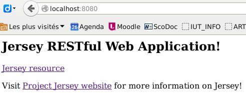
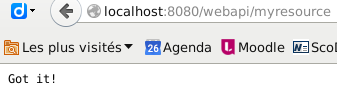
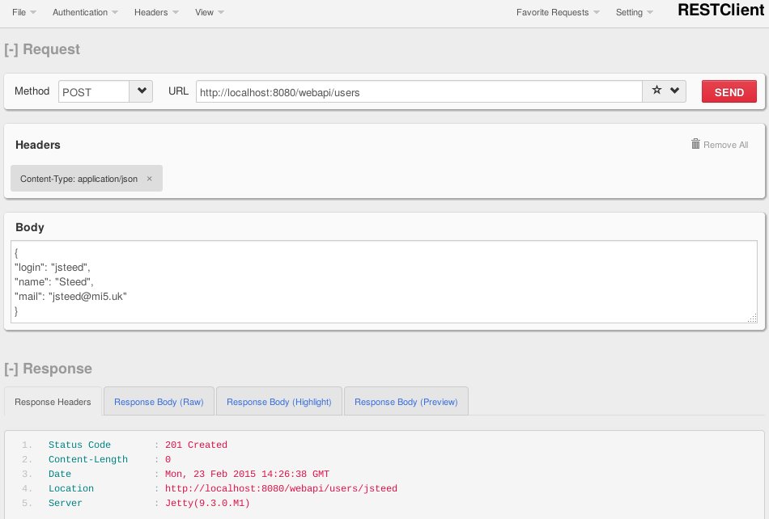
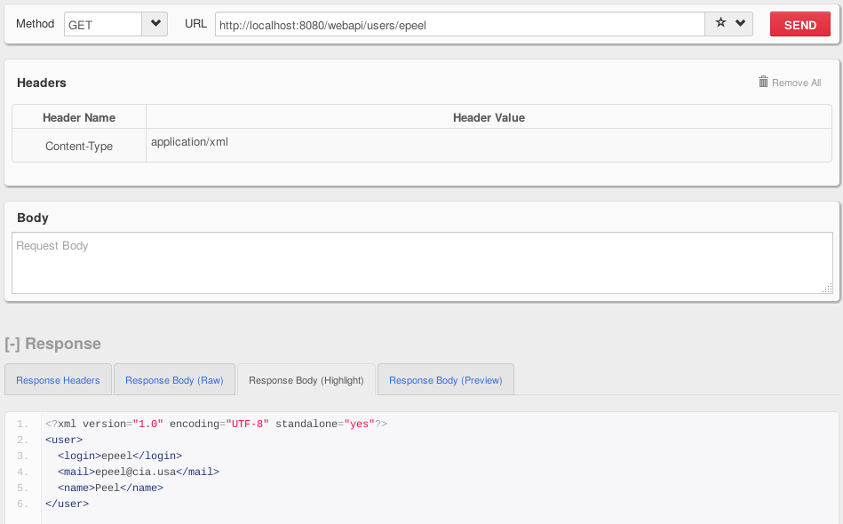

Développement REST avec Jersey
Table des matières
1 Mise en place de l'environnement
Ce tutoriel utilise Maven si votre machine se trouve derrière un proxy, vous devrez mettre la configuration suivante dans le fichier ~/.m2/settings.xml (à adapter à votre environnement) :
<settings> [...] <proxies> <proxy> <id>lille1-proxy</id> <active>true</active> <protocol>http</protocol> <host>cache.univ-lille1.fr</host> <port>3128</port> </proxy> </proxies> [...] </settings>
1.1 Création du projet à l'aide de Maven
La création du projet est réalisée sur la base de l'archétype jersey-quickstart-webapp. Celui-ci génère une arborescence ainsi que des classes exemples pour la partie client Web et pour la partie ressources REST. Vous pouvez adapter les éléments suivants à vos besoins :
| groupId | Définit un identifiant unique pour le projet qui permettra de le déclarer dans les dépendances d'autres projets. |
| Par convention, utilise une notation de paquetage Java pour garantir l'unicité | |
| artifactId | Donnera le nom de l'archive de déploiement (jar, war) ainsi que le nom du répertoire utilisé pour les fichiers générés |
| package | Paquetage utilisé pour vos sources |
La commande à utiliser pour générer votre projet est la suivante :
mvn archetype:generate -DarchetypeArtifactId=jersey-quickstart-webapp -DarchetypeGroupId=org.glassfish.jersey.archetypes -DinteractiveMode=false -DgroupId=fr.univ_lille.iut -DartifactId=first-rest-app -Dpackage=fr.univ_lille.iut
petery@neuvilloise:~/Sandbox/REST$ mvn archetype:generate -DarchetypeArtifactId=jersey-quickstart-webapp -DarchetypeGroupId=org.glassfish.jersey.archetypes -DinteractiveMode=false -DgroupId=fr.univ_lille.iut -DartifactId=first-rest-app -Dpackage=fr.univ_lille.iut [INFO] Scanning for projects... [INFO] [INFO] ------------------------------------------------------------------------ [INFO] Building Maven Stub Project (No POM) 1 [INFO] ------------------------------------------------------------------------ [INFO] [INFO] >>> maven-archetype-plugin:2.2:generate (default-cli) @ standalone-pom >>> [INFO] [INFO] <<< maven-archetype-plugin:2.2:generate (default-cli) @ standalone-pom <<< [INFO] [INFO] --- maven-archetype-plugin:2.2:generate (default-cli) @ standalone-pom --- [INFO] Generating project in Batch mode [INFO] Archetype [org.glassfish.jersey.archetypes:jersey-quickstart-webapp:2.16] found in catalog remote [INFO] ---------------------------------------------------------------------------- [INFO] Using following parameters for creating project from Old (1.x) Archetype: jersey-quickstart-webapp:2.16 [INFO] ---------------------------------------------------------------------------- [INFO] Parameter: groupId, Value: fr.univ_lille.iut [INFO] Parameter: packageName, Value: fr.univ_lille.iut [INFO] Parameter: package, Value: fr.univ_lille.iut [INFO] Parameter: artifactId, Value: first-rest-app [INFO] Parameter: basedir, Value: /home/petery/Sandbox/REST [INFO] Parameter: version, Value: 1.0-SNAPSHOT [INFO] project created from Old (1.x) Archetype in dir: /home/petery/Sandbox/REST/first-rest-app [INFO] ------------------------------------------------------------------------ [INFO] BUILD SUCCESS [INFO] ------------------------------------------------------------------------ [INFO] Total time: 12.130s [INFO] Finished at: Mon Feb 23 14:28:23 CET 2015 [INFO] Final Memory: 14M/240M [INFO] ------------------------------------------------------------------------
Après avoir téléchargé les dépendances nécessaires, vous devriez avoir dans le répertoire first-rest-app l'arborescence suivante :
first-rest-app/
├── pom.xml
└── src
└── main
├── java
│ └── fr
│ └── univ_lille
│ └── iut
│ └── MyResource.java
├── resources
└── webapp
├── index.jsp
└── WEB-INF
└── web.xml
Si vous utiliser git c'est le moment de faire un git init et de créer votre fichier .gitignore
*~ .project .classpath .settings target/
puis de faire git add --all
A ce stade, on a un squelette de développement comprenant une page JSP ainsi qu'une ressource. On peut à partir de là générer une archive war qui pourra être déployée dans un container de Servlets :
petery@neuvilloise:~/Sandbox/REST/first-rest-app$ mvn package [INFO] Scanning for projects... [INFO] [INFO] ------------------------------------------------------------------------ [INFO] Building first-rest-app 1.0-SNAPSHOT [INFO] ------------------------------------------------------------------------ [INFO] [INFO] --- maven-resources-plugin:2.3:resources (default-resources) @ first-rest-app --- [INFO] Using 'UTF-8' encoding to copy filtered resources. [INFO] Copying 0 resource [INFO] [INFO] --- maven-compiler-plugin:2.5.1:compile (default-compile) @ first-rest-app --- [INFO] Compiling 1 source file to /home/petery/Sandbox/REST/first-rest-app/target/classes [INFO] [INFO] --- maven-resources-plugin:2.3:testResources (default-testResources) @ first-rest-app --- [INFO] Using 'UTF-8' encoding to copy filtered resources. [INFO] skip non existing resourceDirectory /home/petery/Sandbox/REST/first-rest-app/src/test/resources [INFO] [INFO] --- maven-compiler-plugin:2.5.1:testCompile (default-testCompile) @ first-rest-app --- [INFO] No sources to compile [INFO] [INFO] --- maven-surefire-plugin:2.10:test (default-test) @ first-rest-app --- [INFO] No tests to run. [INFO] Surefire report directory: /home/petery/Sandbox/REST/first-rest-app/target/surefire-reports ------------------------------------------------------- T E S T S ------------------------------------------------------- Results : Tests run: 0, Failures: 0, Errors: 0, Skipped: 0 [INFO] [INFO] --- maven-war-plugin:2.1.1:war (default-war) @ first-rest-app --- [INFO] Packaging webapp [INFO] Assembling webapp [first-rest-app] in [/home/petery/Sandbox/REST/first-rest-app/target/first-rest-app] [INFO] Processing war project [INFO] Copying webapp resources [/home/petery/Sandbox/REST/first-rest-app/src/main/webapp] [INFO] Webapp assembled in [243 msecs] [INFO] Building war: /home/petery/Sandbox/REST/first-rest-app/target/first-rest-app.war [INFO] WEB-INF/web.xml already added, skipping [INFO] ------------------------------------------------------------------------ [INFO] BUILD SUCCESS [INFO] ------------------------------------------------------------------------ [INFO] Total time: 4.156s [INFO] Finished at: Mon Feb 23 14:30:05 CET 2015 [INFO] Final Memory: 13M/232M [INFO] ------------------------------------------------------------------------
1.2 Ajouter un environnement de test
Afin de pouvoir tester votre développement au fur et à mesure sans devoir installer un container extérieur, nous allons utiliser un plugin Jetty. Pour cela modifiez votre pom.xml avec le code suivant :
<project... [...] <build> [...] <plugins> [...] <plugin> <groupId>org.eclipse.jetty</groupId> <artifactId>jetty-maven-plugin</artifactId> <version>9.3.0.M1</version> <configuration> <scanIntervalSeconds>10</scanIntervalSeconds> </configuration> </plugin> </plugins> [..]
Vous pouvez maintenant lancer votre container avec la commande mvn jetty:run
petery@neuvilloise:~/Sandbox/REST/first-rest-app$ mvn jetty:run
[INFO] Scanning for projects...
[INFO]
[INFO] ------------------------------------------------------------------------
[INFO] Building first-rest-app 1.0-SNAPSHOT
[INFO] ------------------------------------------------------------------------
[INFO]
[INFO] >>> jetty-maven-plugin:9.3.0.M1:run (default-cli) @ first-rest-app >>>
[INFO]
[INFO] --- maven-resources-plugin:2.3:resources (default-resources) @ first-rest-app ---
[INFO] Using 'UTF-8' encoding to copy filtered resources.
[INFO] Copying 0 resource
[INFO]
[INFO] --- maven-compiler-plugin:2.5.1:compile (default-compile) @ first-rest-app ---
[INFO] Nothing to compile - all classes are up to date
[INFO]
[INFO] --- maven-resources-plugin:2.3:testResources (default-testResources) @ first-rest-app ---
[INFO] Using 'UTF-8' encoding to copy filtered resources.
[INFO] skip non existing resourceDirectory /home/petery/Sandbox/REST/first-rest-app/src/test/resources
[INFO]
[INFO] --- maven-compiler-plugin:2.5.1:testCompile (default-testCompile) @ first-rest-app ---
[INFO] No sources to compile
[INFO]
[INFO] <<< jetty-maven-plugin:9.3.0.M1:run (default-cli) @ first-rest-app <<<
[INFO]
[INFO] --- jetty-maven-plugin:9.3.0.M1:run (default-cli) @ first-rest-app ---
[INFO] Configuring Jetty for project: first-rest-app
[INFO] webAppSourceDirectory not set. Trying src/main/webapp
[INFO] Reload Mechanic: automatic
[INFO] Classes = /home/petery/Sandbox/REST/first-rest-app/target/classes
2015-02-23 14:32:19.313:INFO::main: Logging initialized @2883ms
[INFO] Context path = /
[INFO] Tmp directory = /home/petery/Sandbox/REST/first-rest-app/target/tmp
[INFO] Web defaults = org/eclipse/jetty/webapp/webdefault.xml
[INFO] Web overrides = none
[INFO] web.xml file = file:///home/petery/Sandbox/REST/first-rest-app/src/main/webapp/WEB-INF/web.xml
[INFO] Webapp directory = /home/petery/Sandbox/REST/first-rest-app/src/main/webapp
2015-02-23 14:32:19.416:INFO:oejs.Server:main: jetty-9.3.0.M1
2015-02-23 14:32:20.873:INFO:oejsh.ContextHandler:main: Started o.e.j.m.p.JettyWebAppContext@5da03325{/,file:///home/petery/Sandbox/REST/first-rest-app/src/main/webapp/,AVAILABLE}{file:///home/petery/Sandbox/REST/first-rest-app/src/main/webapp/}
2015-02-23 14:32:20.886:INFO:oejs.ServerConnector:main: Started ServerConnector@30e556bc{HTTP/1.1,[http/1.1]}{0.0.0.0:8080}
2015-02-23 14:32:20.887:INFO:oejs.Server:main: Started @4457ms
[INFO] Started Jetty Server
[INFO] Starting scanner at interval of 10 seconds.
Vous pouvez maintenant tester l'application générée. Cette application web sera disponible avec l'URL suivante : http:localhost:8080.

Figure 1 : Version initiale de l'application Web générée
Celle-ci comprend une unique ressource (accessible via le lien sur la page) qui répond à une requête GET avec l'URL suivante : http:localhost:8080/webapi/myresource.

Figure 2 : Résultat d'une requête GET sur la ressource générée
1.3 Mise en place de l'environnement de test unitaire (JUnit)
Tout d'abord, nous allons modifier le fichier pom.xml de manière à déclarer la dépendance pour les tests :
[...] <dependencies> [...] <dependency> <groupId>org.glassfish.jersey.test-framework.providers</groupId> <artifactId>jersey-test-framework-provider-jetty</artifactId> <version>2.16</version> </dependency> </dependencies> [...]
Nous allons ensuite créer l'arborescence de test standard (mkdir -p src/test/java/fr/univ_lille/iut) ainsi qu'une classe de test pour notre ressource générée.
Nous obtenons l'arborescence suivante :
first-rest-app/
├── pom.xml
└── src
├── main
│ ├── java
│ │ └── fr
│ │ └── univ_lille
│ │ └── iut
│ │ └── MyResource.java
│ ├── resources
│ └── webapp
│ ├── index.jsp
│ └── WEB-INF
│ └── web.xml
└── test
└── java
└── fr
└── univ_lille
└── iut
└── MyResourceTest.java
La classe de test s'écrit de la façon suivante :
1: package fr.univ_lille.iut; 2: 3: import javax.ws.rs.core.Application; 4: 5: import org.glassfish.jersey.server.ResourceConfig; 6: import org.glassfish.jersey.test.JerseyTest; 7: 8: import org.junit.Test; 9: import static org.junit.Assert.assertEquals; 10: 11: public class MyResourceTest extends JerseyTest { 12: 13: @Override 14: protected Application configure() { 15: return new ResourceConfig(MyResource.class); 16: 17: } 18: 19: /** 20: * Test to see that the message "Got it!" is sent in the response. 21: */ 22: @Test 23: public void testGetIt() { 24: String responseMsg = target("/myresource").request().get(String.class); 25: assertEquals("Got it!", responseMsg); 26: } 27: }
- toutes les classes issue de paquetages javax.ws.rs.* sont des classes du standard JAX-RS et correpondent donc à du code portable vers un autre cadre de développement (par exemple RESTeasy);
- ici, j'ai choisi d'utiliser la classe
JerseyTestpour me faciliter la vie, le code des test n'est donc pas portable;- quand on utilise JerseyTest on DOIT redéfinir la méthode
configure()qui permet de configurer le contexte d'exécution; - la classe
ResourceConfigpermet de spécifier les ressources qui seront disponibles dans l'environnement.
- quand on utilise JerseyTest on DOIT redéfinir la méthode
- la méthode de test écrite ici fait une requête HTTP GET sur la resource. Pour cette invocation, Elle utilise une classe WebTarget obtenue grâce à la méthode
target()de la classeJerseyTest.
Pour lancer les tests faire mvn test
petery@neuvilloise:~/Sandbox/REST/first-rest-app$ mvn test
[INFO] Scanning for projects...
[INFO]
[INFO] ------------------------------------------------------------------------
[INFO] Building first-rest-app 1.0-SNAPSHOT
[INFO] ------------------------------------------------------------------------
[INFO]
[INFO] --- maven-resources-plugin:2.3:resources (default-resources) @ first-rest-app ---
[INFO] Using 'UTF-8' encoding to copy filtered resources.
[INFO] Copying 0 resource
[INFO]
[INFO] --- maven-compiler-plugin:2.5.1:compile (default-compile) @ first-rest-app ---
[INFO] Nothing to compile - all classes are up to date
[INFO]
[INFO] --- maven-resources-plugin:2.3:testResources (default-testResources) @ first-rest-app ---
[INFO] Using 'UTF-8' encoding to copy filtered resources.
[INFO] skip non existing resourceDirectory /home/petery/Sandbox/REST/first-rest-app/src/test/resources
[INFO]
[INFO] --- maven-compiler-plugin:2.5.1:testCompile (default-testCompile) @ first-rest-app ---
[INFO] Compiling 1 source file to /home/petery/Sandbox/REST/first-rest-app/target/test-classes
[INFO]
[INFO] --- maven-surefire-plugin:2.10:test (default-test) @ first-rest-app ---
[INFO] Surefire report directory: /home/petery/Sandbox/REST/first-rest-app/target/surefire-reports
-------------------------------------------------------
T E S T S
-------------------------------------------------------
Running fr.univ_lille.iut.MyResourceTest
févr. 23, 2015 2:42:42 PM org.glassfish.jersey.test.jetty.JettyTestContainerFactory$JettyTestContainer <init>
INFOS: Creating JettyTestContainer configured at the base URI http://localhost:9998/
2015-02-23 14:42:43.078:INFO:oejs.Server:main: jetty-9.1.1.v20140108
2015-02-23 14:42:43.128:INFO:oejs.ServerConnector:main: Started ServerConnector@79885c3a{HTTP/1.1}{0.0.0.0:9998}
2015-02-23 14:42:43.326:INFO:oejs.ServerConnector:main: Stopped ServerConnector@79885c3a{HTTP/1.1}{0.0.0.0:9998}
Tests run: 1, Failures: 0, Errors: 0, Skipped: 0, Time elapsed: 0.985 sec
Results :
Tests run: 1, Failures: 0, Errors: 0, Skipped: 0
[INFO] ------------------------------------------------------------------------
[INFO] BUILD SUCCESS
[INFO] ------------------------------------------------------------------------
[INFO] Total time: 2.904s
[INFO] Finished at: Mon Feb 23 14:42:43 CET 2015
[INFO] Final Memory: 13M/303M
[INFO] ------------------------------------------------------------------------
Nous avons maintenant un environnement de développement correct pour développer nos services REST ainsi que la partie client Web qui peut lui être associée.
2 Création d'une ressource User
Sur cette base nous allons pouvoir développer un simple service REST de gestion d'utilisateurs. Vous pouvez maintenant effacer les fichiers correspondant à la ressource générée en exemple (MyResource.java et MyResourceTest.java).
2.1 Définition de l'API de la ressource User
Nous pouvons tout d'abord réfléchir à API REST que nous allons offrir pour la ressource User. Celle-ci devrait répondre aux URI suivantes :
| Opération | URI | Action réalisée | Retour |
|---|---|---|---|
| GET | /users | récupère l'ensemble des utilisateurs | 200 et un tableau d'utilisateurs |
| GET | /users/{id} | récupère l'utilisateur d'identifiant id | 200 et l'utilisateur |
| 404 si id est inconnu | |||
| POST | /users | création d'un utilisateur | 201 et l'URI de la ressource créée |
| 400 si les informations ne sont pas correctes | |||
| 409 si l'utilisateur existe déjà | |||
| PUT | /users/{id} | modification d'un utilisateur | 200 et l'utilisateur modifié |
| 404 si id est inconnu | |||
| 400 si les informations ne sont pas correctes | |||
| DELETE | /users/{id} | destruction de l'utilisateur d'identifiant id | 204 si l'opération à réussi |
| 404 si id est inconnu |
2.2 Première étape : la création des utilisateurs
Dans un premier temps, nous allons créer une classe User qui représentera un utilisateur. Cette classe doit respecter les conventions de JavaBean (contructeur vide, méthodes getter et setter pour les attributs…). Cela nous permettra de bénéficier de la prise en charge automatique par Jersey de la transmission de ce type d'objet dans les requêtes et les réponses.
1: package fr.univ_lille.iut; 2: 3: public class User { 4: private String login; 5: private String name; 6: private String mail; 7: 8: public User(String login, String name, String mail) { 9: this.login = login; 10: this.name = name; 11: this.mail = mail; 12: } 13: 14: public User() {} 15: 16: public String getLogin() { 17: return login; 18: } 19: 20: public void setLogin(String login) { 21: this.login = login; 22: } 23: 24: [...] 25: 26: public boolean equals(Object u) { 27: return login.equals(((User) u).login) || name.equals(((User) u).name) || mail.equals(((User) u).mail); 28: } 29: 30: public String toString() { 31: return login + " " + name + " " + mail; 32: } 33: }
Puis afin de développer notre ressource… nous allons commencer par écrire un premier test!
Ce test porte sur la création d'un utilisateur. Il vérifie la réponse en terme de code de retour de HTTP (201 - created) et qu'on récupère l'URI de la nouvelle instance de resource dans les en-tête HTTP sous le nom Location. Les informations concernant l'utilisateur seront envoyées au format JSON. Pour que ce format soit prit en charge par Jersey, il faut modifier le fichier pom.xml. La dépendance à utiliser est déjà dans le fichier généré par l'Archetype mais il faut la décommenter.
<dependencies>
[...]
<dependency>
<groupId>org.glassfish.jersey.media</groupId>
<artifactId>jersey-media-moxy</artifactId>
</dependency>
[...]
Nous pouvons maintenant écrire notre classe de test.
1: package fr.univ_lille.iut; 2: 3: import javax.ws.rs.client.Entity; 4: import javax.ws.rs.core.MediaType; 5: import javax.ws.rs.core.Application; 6: import javax.ws.rs.core.Response; 7: 8: import org.glassfish.jersey.server.ResourceConfig; 9: import org.glassfish.jersey.test.JerseyTest; 10: 11: import org.junit.Test; 12: import static org.junit.Assert.assertEquals; 13: import static org.junit.Assert.assertTrue; 14: 15: import java.net.URI; 16: import java.net.URISyntaxException; 17: 18: public class UserResourceTest extends JerseyTest { 19: 20: /** 21: * Il est obligatoire de redéfinir cette méthode qui permet de configurer le contexte de Jersey 22: */ 23: @Override 24: protected Application configure() { 25: return new ResourceConfig(UserResource.class); 26: } 27: 28: /** 29: * Test de création d'un utilisateur (retour HTTP et envoi de l'URI de la nouvelle instance) 30: */ 31: @Test 32: public void testCreateUser() { 33: User user = new User("jsteed", "Steed", "jsteed@mi5.uk"); 34: // Conversion de l'instance de User au format JSON pour l'envoi 35: Entity<User> userEntity = Entity.entity(user, MediaType.APPLICATION_JSON); 36: 37: // Envoi de la requête HTTP POST pour la création de l'utilisateur 38: Response response = target("/users").request().post(userEntity); 39: 40: // Vérification du code de retour HTTP 41: assertEquals(201, response.getStatus()); 42: 43: // Vérification que la création renvoie bien l'URI de la nouvelle instance dans le header HTTP 'Location' 44: // ici : http://localhost:8080/users/jsteed 45: URI uriAttendue = target("/users").path(user.getLogin()).getUri(); 46: assertTrue(uriAttendue.equals(response.getLocation())); 47: } 48: }
- Par convention, la création d'une nouvelle ressource utilise la méthode HTTP POST. Elle est confirmée par un code de retour
201 - createdET l'en-tête HTTP doit contenir un champLocationdéfinissant l'URI de la nouvelle resource. Nous allons donc tester ces deux éléments. - La méthode
post()que nous avons utilisée prend en paramètre une classe Entity. Celle-ci encapsule les données transmises, associées à des informations telles que l'encodage des données (iciapplication/json).
Afin de pouvoir compiler et utiliser la classe de test, nous avons besoin d'une classe ressource minimale que voici :
1: package fr.univ_lille.iut; 2: 3: import javax.ws.rs.Path; 4: 5: /** 6: * Ressource User (accessible avec le chemin "/users") 7: */ 8: @Path("users") 9: public class UserResource { 10: 11: /** 12: * Une ressource doit avoir un contructeur (éventuellement sans arguments) 13: */ 14: public UserResource() { 15: } 16: }
- La spécification JAX-RS indique qu'une ressource (i.e. une classe associée à une annotation
@Path) doit avoir au moins un contructeur public pour lequel JAX-RS va initialiser les paramètres à partir de la requête. Ce constructeur peut éventuellement être sans paramètres.
Nous pouvons maintenant faire notre test avec mvn test. Bien sûr, le test échoue…
petery@neuvilloise:~/Sandbox/REST/first-rest-app$ mvn test
[INFO] Scanning for projects...
[INFO]
[INFO] ------------------------------------------------------------------------
[INFO] Building first-rest-app 1.0-SNAPSHOT
[INFO] ------------------------------------------------------------------------
[INFO]
[INFO] --- maven-resources-plugin:2.3:resources (default-resources) @ first-rest-app ---
[INFO] Using 'UTF-8' encoding to copy filtered resources.
[INFO] Copying 0 resource
[INFO]
[INFO] --- maven-compiler-plugin:2.5.1:compile (default-compile) @ first-rest-app ---
[INFO] Nothing to compile - all classes are up to date
[INFO]
[INFO] --- maven-resources-plugin:2.3:testResources (default-testResources) @ first-rest-app ---
[INFO] Using 'UTF-8' encoding to copy filtered resources.
[INFO] skip non existing resourceDirectory /home/petery/Sandbox/REST/first-rest-app/src/test/resources
[INFO]
[INFO] --- maven-compiler-plugin:2.5.1:testCompile (default-testCompile) @ first-rest-app ---
[INFO] Nothing to compile - all classes are up to date
[INFO]
[INFO] --- maven-surefire-plugin:2.10:test (default-test) @ first-rest-app ---
[INFO] Surefire report directory: /home/petery/Sandbox/REST/first-rest-app/target/surefire-reports
-------------------------------------------------------
T E S T S
-------------------------------------------------------
Running fr.univ_lille.iut.UserResourceTest
févr. 23, 2015 3:04:22 PM org.glassfish.jersey.test.jetty.JettyTestContainerFactory$JettyTestContainer <init>
INFOS: Creating JettyTestContainer configured at the base URI http://localhost:9998/
févr. 23, 2015 3:04:23 PM org.glassfish.jersey.internal.Errors logErrors
AVERTISSEMENT: The following warnings have been detected: WARNING: A resource, Resource{"users", 0 child resources, 0 resource methods, 0 sub-resource locator, 0 method handler classes, 0 method handler instances}, with path "users" is empty. It has no resource (or sub resource) methods neither sub resource locators defined.
2015-02-23 15:04:23.145:INFO:oejs.Server:main: jetty-9.1.1.v20140108
2015-02-23 15:04:23.180:INFO:oejs.ServerConnector:main: Started ServerConnector@1de10458{HTTP/1.1}{0.0.0.0:9998}
2015-02-23 15:04:23.622:INFO:oejs.ServerConnector:main: Stopped ServerConnector@1de10458{HTTP/1.1}{0.0.0.0:9998}
Tests run: 1, Failures: 1, Errors: 0, Skipped: 0, Time elapsed: 1.364 sec <<< FAILURE!
Results :
Failed tests: testCreateUser(fr.univ_lille.iut.UserResourceTest): expected:<201> but was:<404>
Tests run: 1, Failures: 1, Errors: 0, Skipped: 0
[INFO] ------------------------------------------------------------------------
[INFO] BUILD FAILURE
[INFO] ------------------------------------------------------------------------
[INFO] Total time: 3.101s
[INFO] Finished at: Mon Feb 23 15:04:23 CET 2015
[INFO] Final Memory: 9M/238M
[INFO] ------------------------------------------------------------------------
Nous allons maintenant compléter notre classe ressource avec la création des utilisateurs (HTTP POST).
1: package fr.univ_lille.iut; 2: 3: import javax.ws.rs.Path; 4: import javax.ws.rs.POST; 5: 6: import javax.ws.rs.core.Response; 7: import javax.ws.rs.core.UriBuilder; 8: import javax.ws.rs.core.UriInfo; 9: import javax.ws.rs.core.Context; 10: 11: import java.net.URI; 12: import java.net.URISyntaxException; 13: 14: import java.util.Map; 15: import java.util.HashMap; 16: 17: /** 18: * Ressource User (accessible avec le chemin "/users") 19: */ 20: @Path("users") 21: public class UserResource { 22: // Pour l'instant, on se contentera d'une variable statique pour conserver l'état 23: private static Map<String, User> users = new HashMap<>(); 24: 25: // L'annotation @Context permet de récupérer des informations sur le contexte d'exécution de la ressource. 26: // Ici, on récupère les informations concernant l'URI de la requête HTTP, ce qui nous permettra de manipuler 27: // les URI de manière générique. 28: @Context 29: public UriInfo uriInfo; 30: 31: /** 32: * Une ressource doit avoir un contructeur (éventuellement sans arguments) 33: */ 34: public UserResource() { 35: } 36: 37: /** 38: * Méthode de création d'un utilisateur qui prend en charge les requêtes HTTP POST 39: * La méthode renvoie l'URI de la nouvelle instance en cas de succès 40: * 41: * @param user Instance d'utilisateur à créer 42: * @return Response le corps de la réponse est vide, le code de retour HTTP est fixé à 201 si la création est faite 43: * L'en-tête contient un champs Location avec l'URI de la nouvelle ressource 44: */ 45: @POST 46: public Response createUser(User user) { 47: // Si l'utilisateur existe déjà, renvoyer 409 48: if ( users.containsKey(user.getLogin()) ) { 49: return Response.status(Response.Status.CONFLICT).build(); 50: } 51: else { 52: users.put(user.getLogin(), user); 53: 54: // On renvoie 201 et l'instance de la ressource dans le Header HTTP 'Location' 55: URI instanceURI = uriInfo.getAbsolutePathBuilder().path(user.getLogin()).build(); 56: return Response.created(instanceURI).build(); 57: } 58: } 59: }
- Par convention lors d'une création de ressource, la réponse utilise un code de retour
201et indique l'URI de la nouvelle resource dans l'en-tête HTTP (champ 'Location'). - La spécification JAX-RS précise que si le corps de la réponse HTTP est vide (c'est le cas ici), alors le retour de la méthode java doit être de type
Reponse.
Nous pouvons maintenant tester avec succès notre création d'utilisateur avec mvn test
petery@neuvilloise:~/Sandbox/REST/first-rest-app$ mvn test
[INFO] Scanning for projects...
[INFO]
[INFO] ------------------------------------------------------------------------
[INFO] Building first-rest-app 1.0-SNAPSHOT
[INFO] ------------------------------------------------------------------------
[INFO]
[INFO] --- maven-resources-plugin:2.3:resources (default-resources) @ first-rest-app ---
[INFO] Using 'UTF-8' encoding to copy filtered resources.
[INFO] Copying 0 resource
[INFO]
[INFO] --- maven-compiler-plugin:2.5.1:compile (default-compile) @ first-rest-app ---
[INFO] Compiling 1 source file to /home/petery/Sandbox/REST/first-rest-app/target/classes
[INFO]
[INFO] --- maven-resources-plugin:2.3:testResources (default-testResources) @ first-rest-app ---
[INFO] Using 'UTF-8' encoding to copy filtered resources.
[INFO] skip non existing resourceDirectory /home/petery/Sandbox/REST/first-rest-app/src/test/resources
[INFO]
[INFO] --- maven-compiler-plugin:2.5.1:testCompile (default-testCompile) @ first-rest-app ---
[INFO] Nothing to compile - all classes are up to date
[INFO]
[INFO] --- maven-surefire-plugin:2.10:test (default-test) @ first-rest-app ---
[INFO] Surefire report directory: /home/petery/Sandbox/REST/first-rest-app/target/surefire-reports
-------------------------------------------------------
T E S T S
-------------------------------------------------------
Running fr.univ_lille.iut.UserResourceTest
févr. 23, 2015 3:16:11 PM org.glassfish.jersey.test.jetty.JettyTestContainerFactory$JettyTestContainer <init>
INFOS: Creating JettyTestContainer configured at the base URI http://localhost:9998/
2015-02-23 15:16:11.649:INFO:oejs.Server:main: jetty-9.1.1.v20140108
2015-02-23 15:16:11.689:INFO:oejs.ServerConnector:main: Started ServerConnector@15858f02{HTTP/1.1}{0.0.0.0:9998}
2015-02-23 15:16:12.242:INFO:oejs.ServerConnector:main: Stopped ServerConnector@15858f02{HTTP/1.1}{0.0.0.0:9998}
Tests run: 1, Failures: 0, Errors: 0, Skipped: 0, Time elapsed: 1.385 sec
Results :
Tests run: 1, Failures: 0, Errors: 0, Skipped: 0
[INFO] ------------------------------------------------------------------------
[INFO] BUILD SUCCESS
[INFO] ------------------------------------------------------------------------
[INFO] Total time: 3.465s
[INFO] Finished at: Mon Feb 23 15:16:12 CET 2015
[INFO] Final Memory: 17M/303M
[INFO] ------------------------------------------------------------------------
A titre d'exemple voici le résultat de la création d'un utilisateur avec le plugin Firefox nommé RESTClient (après avoir lancé le serveur avec mvn jetty:run) :

Figure 3 : Création d'un utilisateur via le plugin RESTClient
Il faut également tester le cas où on essaye de créer deux utilisateurs avec le même login. Pour cela, on ajoute le test suivant à la classe UserResourceTest :
1: @Path("users") 2: public class UserResource { 3: [...] 4: /** 5: * Test de création en double d'un utilisateur. Doit renvoyer 409 6: * ! Cela fonctionne car le test précédent à déjà créé l'utilisateur et que le container est conservé ! 7: */ 8: @Test 9: public void testCreateSameUser() { 10: User user = new User("jsteed", "Steed", "jsteed@mi5.uk"); 11: Entity<User> userEntity = Entity.entity(user, MediaType.APPLICATION_JSON); 12: 13: int same = target("/users").request().post(userEntity).getStatus(); 14: assertEquals(409, same); 15: } 16: [...]
Ce test réussi. Toutefois il révèle un problème qu'il va falloir résoudre : la ressource conserve un état d'un test à l'autre, les tests ne peuvent donc pas être indépendants. Or JUnit ne spécifie pas, a priori, l'ordre d'exécution des tests. Pour résoudre cela, nous allons devoir imposer un ordre (voir ce lien).
Nous allons donc annoter notre classe de manière à fixer l'ordre d'exécution des tests et renommer nos deux méthodes de test. Notre classe va maintenant ressembler à cela :
1: [...] 2: import org.junit.FixMethodOrder; 3: import org.junit.runners.MethodSorters; 4: 5: @FixMethodOrder(MethodSorters.NAME_ASCENDING) 6: public class UserResourceTest extends JerseyTest { 7: [...] 8: 9: @Test 10: public void test_B_CreateUser() { 11: [...] 12: } 13: 14: @Test 15: public void test_C_CreateSameUser() { 16: [...] 17: } 18: }
Sur cette base, nous allons pouvoir prendre en charge les autres méthodes HTTP.
2.3 Deuxième étape : les méthodes GET, PUT et DELETE
2.3.1 La méthode GET
La méthode HTTP GET permet d'obtenir la liste des utilisateurs si on l'utilise sur /users et un utilisateur spécifique si on l'utilise sur /user/{login}
Voici les différents tests qu'on peut réaliser dans le premier cas :
1: public class UserResourceTest extends JerseyTest { 2: [...] 3: /** 4: * Vérifie qu'initialement on a une liste d'utilisateurs vide 5: */ 6: @Test 7: public void test_A_GetEmptyListofUsers() { 8: List<User> list = target("/users").request().get(new GenericType<List<User>>(){}); 9: assertTrue(list.isEmpty()); 10: } 11: 12: /** 13: * Vérifie que je renvoie bien une liste contenant tous les utilisateurs (ici 2) 14: */ 15: @Test 16: public void test_D_GetTwoUsers() { 17: User user = new User("epeel", "Peel", "epeel@mi5.uk"); 18: Entity<User> userEntity = Entity.entity(user, MediaType.APPLICATION_JSON); 19: 20: target("/users").request().post(userEntity); 21: 22: List<User> list = target("/users").request().get(new GenericType<List<User>>(){}); 23: assertEquals(2, list.size()); 24: }
- La méthode
get()telle que nous l'utilisons ici permet de spécifier un type complexe basé sur une classe paramétrée que nous voulons récupérer dans le corps de la réponse HTTP. Il se base sur l'utilisation de la classeGenericType.
La classe UserRessource est complétée avec une nouvelle méthode prenant en charge HTTP GET sur /users :
1: /** 2: * Method prenant en charge les requêtes HTTP GET. 3: * 4: * @return Une liste d'utilisateurs 5: */ 6: @GET 7: public List<User> getUsers() { 8: return new ArrayList<User>(users.values()); 9: }
En ce qui concerne le méthode HTTP GET sur /users/{login} on doit tester qu'on récupère bien l'instance d'un utilisateur et que tenter de récupérer un utilisateur inexistant renvoie une erreur HTTP 404.
1: /** 2: * Vérifie la récupération d'un utilisateur spécifique 3: */ 4: @Test 5: public void test_E_GetOneUser() { 6: User user = new User("jsteed", "Steed", "jsteed@mi5.uk"); 7: 8: User result = target("/users").path("jsteed").request().get(User.class); 9: assertEquals(user, result); 10: } 11: 12: /** 13: * Vérifie que la récupération d'un utilisateur inexistant renvoie 404 14: */ 15: @Test 16: public void test_F_GetInexistantUser() { 17: int notFound = target("/users").path("tking").request().get().getStatus(); 18: assertEquals(404, notFound); 19: }
L'implémentation de cette méthode dans la classe UserRessource est assez simple :
1: /** 2: * Méthode prenant en charge les requêtes HTTP GET sur /users/{login} 3: * 4: * @return Une instance de User 5: */ 6: @GET 7: @Path("{login}") 8: public User getUser(@PathParam("login") String login) { 9: // Si l'utilisateur est inconnu, on renvoie 404 10: if ( ! users.containsKey(login) ) { 11: throw new NotFoundException(); 12: } 13: else { 14: return users.get(login); 15: } 16: }
- On notera l'introduction de l'annotation
@PathParamqui permet d'initialiser un paramètre de la méthode avec un paramètre de chemin de l'URI. On pourrait éventuellement utiliser l'annotation@DefaultValuepour définir une valeur par défaut. - La méthode renvoie une instance de la classe
User. Quand l'utilisateur n'existe pas, on ne peut pas se contenter de renvoyernullcar la spécification précise que dans ce cas, le code de retour généré est204 - no content. Heureusement, il existe un exemble d'exceptions qui peuvent être levées et qui sont associées à des codes d'erreur HTTP.
2.3.2 La méthode DELETE
La méthode HTTP DELETE doit permettre la suppression d'une instance de ressource. On doit tester que le suppression est effective et qu'une tentative de suppression d'un utilisateur inexistant renvoie bien une erreur 404. Voici les méthodes de test correspondantes :
1: /** 2: * 3: * Vérifie que la suppression d'une ressource est effective 4: */ 5: @Test 6: public void test_G_DeleteOneUser() { 7: int code = target("/users").path("jsteed").request().delete().getStatus(); 8: assertEquals(204, code); 9: 10: int notFound = target("/users").path("jsteed").request().get().getStatus(); 11: assertEquals(404, notFound); 12: } 13: 14: /** 15: * 16: * Vérifie que la suppression d'un utilisateur inexistant renvoie 404 17: */ 18: @Test 19: public void test_H_DeleteIntexistantUser() { 20: int notFound = target("/users").path("tking").request().delete().getStatus(); 21: assertEquals(404, notFound); 22: }
Encore une fois, l'implémentation de la méthode est relativement simple. On peut noter que comme cette méthode ne renvoie pas de contenu dans le corps de la réponse HTTP, on utilise comme valeur de retour de la méthode le type Response afin de pouvoir fixer une code de retour HTTP.
1: @DELETE 2: @Path("{login}") 3: public Response deleteUser(@PathParam("login") String login) { 4: // Si l'utilisateur est inconnu, on renvoie 404 5: if ( ! users.containsKey(login) ) { 6: throw new NotFoundException(); 7: } 8: else { 9: users.remove(login); 10: return Response.status(Response.Status.NO_CONTENT).build(); 11: } 12: }
2.3.3 La méthode PUT
La méthode HTTP PUT permet de modifier une ressource existante. On devra donc vérifier qu'une ressource est effectivement modifiée et qu'une tentative de modification d'une ressource inexistante renvoie une erreur 404.
1: /** 2: * 3: * Vérifie que la modification d'une ressource est effective 4: */ 5: @Test 6: public void test_I_ModifyUser() { 7: User modified = new User("epeel", "Peel", "epeel@cia.usa"); 8: Entity<User> userEntity = Entity.entity(modified, MediaType.APPLICATION_JSON); 9: 10: int noContent = target("/users").path("epeel").request().put(userEntity).getStatus(); 11: assertEquals(204, noContent); 12: 13: User retrieved = target("/users").path("epeel").request().get(User.class); 14: assertEquals(modified, retrieved); 15: } 16: 17: /** 18: * 19: * Vérifie que la suppression d'un utilisateur inexistant renvoie 404 20: */ 21: @Test 22: public void test_J_ModifyInexistantUser() { 23: User inexistant = new User("jsteed", "Steed", "jsteed@mi5.uk"); 24: Entity<User> userEntity = Entity.entity(inexistant, MediaType.APPLICATION_JSON); 25: int notFound = target("/users").path("jsteed").request().put(userEntity).getStatus(); 26: assertEquals(404, notFound); 27: }
L'implémentation de la méthode dans la classe UserRessource est la suivante :
1: /** 2: * Méthode prenant en charge les requêtes HTTP DELETE sur /users{login} 3: * 4: * @param login le login de l'utilisateur à modifier 5: * @param user l'entité correspondant à la nouvelle instance 6: * @return Un code de retour HTTP dans un objet Response 7: */ 8: @PUT 9: @Path("{login}") 10: public Response modifyUser(@PathParam("login") String login, User user) { 11: // Si l'utilisateur est inconnu, on renvoie 404 12: if ( ! users.containsKey(user.getLogin()) ) { 13: throw new NotFoundException(); 14: } 15: else { 16: users.put(user.getLogin(), user); 17: return Response.status(Response.Status.NO_CONTENT).build(); 18: } 19: }
2.3.4 Les méthodes HEAD et OPTIONS
Vous pouvez si vous le souhaitez fournir une implémentation particulière de ces deux méthodes mais la spécification prévoie une prise en charge automatique.
2.4 Jouons avec les types MIME
2.4.1 Le type application/x-www-form-urlencoded
L'implémentation que nous avons réalisée pour l'instant transmet les informations concernant un utilisateur au format JSON. Si, par exemple un utilisateur est créé à partir d'un formulaire Web, le type MIME associé à la méthode POST sera application/x-www-form-urlencoded. A priori, ce format n'est pas pris en charge par notre implémentation de UserResource. Vérifions cela avec un test :
1: @Test 2: public void test_K_CreateUserFromForm() { 3: Form form = new Form(); 4: form.param("login", "tking"); 5: form.param("name", "King"); 6: form.param("mail", "tking@mi5.uk"); 7: 8: Entity<Form> formEntity = Entity.entity(form, MediaType.APPLICATION_FORM_URLENCODED_TYPE); 9: int code = target("/users").request().post(formEntity).getStatus(); 10: 11: assertEquals(201, code); 12: }
Le test échoue effectivement :
petery@neuvilloise:~/Sandbox/REST/first-rest-app$ mvn test [INFO] Scanning for projects... [INFO] [INFO] ------------------------------------------------------------------------ [INFO] Building first-rest-app 1.0-SNAPSHOT [INFO] ------------------------------------------------------------------------ [INFO] [...] Tests run: 11, Failures: 1, Errors: 0, Skipped: 0, Time elapsed: 2.628 sec <<< FAILURE! Results : Failed tests: test_K_CreateUserFromForm(fr.univ_lille.iut.UserResourceTest): expected:<201> but was:<415> Tests run: 11, Failures: 1, Errors: 0, Skipped: 0 [INFO] ------------------------------------------------------------------------ [INFO] BUILD FAILURE [INFO] ------------------------------------------------------------------------ [INFO] Total time: 4.697s [INFO] Finished at: Mon Feb 23 21:41:55 CET 2015 [INFO] Final Memory: 17M/303M [INFO] ------------------------------------------------------------------------
Le code d'erreur retourné est 415 - Unsupported Media Type, ce qui est logique. Pour plus d'information sur les codes des retour HTTP vous pouvez consulter cette page.
Ajoutons donc une méthode pour gérer ce nouveau format à notre ressource.
1: /** 2: * Méthode de création d'un utilisateur qui prend en charge les requêtes HTTP POST au format application/x-www-form-urlencoded 3: * La méthode renvoie l'URI de la nouvelle instance en cas de succès 4: * 5: * @param login login de l'utilisateur 6: * @param name nom de l'utilisateur 7: * @param mail le mail de l'utilisateur 8: * @return Response le corps de la réponse est vide, le code de retour HTTP est fixé à 201 si la création est faite 9: * L'en-tête contient un champs Location avec l'URI de la nouvelle ressource 10: */ 11: @POST 12: @Consumes("application/x-www-form-urlencoded") 13: public Response createUser(@FormParam("login") String login, @FormParam("name") String name, @FormParam("mail") String mail) { 14: // Si l'utilisateur existe déjà, renvoyer 409 15: if ( users.containsKey(login) ) { 16: return Response.status(Response.Status.CONFLICT).build(); 17: } 18: else { 19: users.put(login, new User(login, name, mail)); 20: 21: // On renvoie 201 et l'instance de la ressource dans le Header HTTP 'Location' 22: URI instanceURI = uriInfo.getAbsolutePathBuilder().path(login).build(); 23: return Response.created(instanceURI).build(); 24: } 25: }
La création à partir d'un formulaire est désormais possible.
2.4.2 Et XML alors ?
XML est un format courant qui doit pouvoir être supporté. Nous allons voir comment faire sur la méthode HTTP GET appliquée à /users/{login}. Tout d'abord, préparons le test qui permettra de vérifier que cela fonctionne :
1: /** 2: * Vérifie qu'on récupère bien un utilisateur avec le type MIME application/xml 3: */ 4: @Test 5: public void test_L_GetUserAsXml() { 6: int code = target("/users").path("tking").request(MediaType.APPLICATION_XML).get().getStatus(); 7: assertEquals(code, 200); 8: }
Bien sûr le test échoue :
petery@neuvilloise:~/Sandbox/REST/first-rest-app$ mvn clean test
[INFO] Scanning for projects...
[INFO]
[INFO] ------------------------------------------------------------------------
[INFO] Building first-rest-app 1.0-SNAPSHOT
[INFO] ------------------------------------------------------------------------
[...]
INFOS: Creating JettyTestContainer configured at the base URI http://localhost:9998/
2015-02-24 08:54:58.481:INFO:oejs.Server:main: jetty-9.1.1.v20140108
2015-02-24 08:54:58.488:INFO:oejs.ServerConnector:main: Started ServerConnector@3cb3862e{HTTP/1.1}{0.0.0.0:9998}
févr. 24, 2015 8:54:58 AM org.glassfish.jersey.message.internal.WriterInterceptorExecutor$TerminalWriterInterceptor aroundWriteTo
GRAVE: MessageBodyWriter not found for media type={application/xml, q=1000}, type=class fr.univ_lille.iut.User, genericType=class fr.univ_lille.iut.User. (erreur)
2015-02-24 08:54:58.514:INFO:oejs.ServerConnector:main: Stopped ServerConnector@3cb3862e{HTTP/1.1}{0.0.0.0:9998}
Tests run: 12, Failures: 1, Errors: 0, Skipped: 0, Time elapsed: 2.831 sec <<< FAILURE!
Results :
Failed tests: test_L_GetUserAsXml(fr.univ_lille.iut.UserResourceTest): expected:<500> but was:<200>
Tests run: 12, Failures: 1, Errors: 0, Skipped: 0
Si on s'intéresse au message d'erreur, on s'aperçoit que Jersey ne trouve pas la classe MessageBodyWriter sachant gérer le type application/xml. Les classes qui implémentent les interfaces MessageBodyWriter et MessageBodyReader servent à faire la conversion entre un type de donnée (XML, JSON…) transporté dans la requête HTTP et les types Java. Un certain nombre de formats sont pris en charge nativement ou via un module intégré à Jersey (JSON par exemple).
XML est un des types pris en charge nativement, nous allons maintenant voir comment faire pour qu'il soit pris en charge. Reprenons notre méthode getUser et précisons les types MIME acceptés :
1: /** 2: * Méthode prenant en charge les requêtes HTTP GET sur /users/{login} 3: * 4: * @return Une instance de User 5: */ 6: @GET 7: @Path("{login}") 8: @Produces("application/json,application/xml") 9: public User getUser(@PathParam("login") String login) { 10: // Si l'utilisateur est inconnu, on renvoie 404 11: if ( ! users.containsKey(login) ) { 12: throw new NotFoundException(); 13: } 14: else { 15: return users.get(login); 16: } 17: }
On a simplement rajouté l'annotation @Produces qui précise les types MIME produits par la méthode. L'ordre des types indique la préférence. Ici application/json est le format préféré et il sera utilisé si le client ne précise rien sur ses attentes. Cela n'indique toujours pas à Jersey comment transformer une instance de la classe User en un fichier XML (et inversement). Il existe un standard Java pour ce type de conversion : JAXB ou Java Architecture for XML Binding. Nous allons utiliser celui-ci de manière un peu magique sans rentrer dans les détails de JAXB. Pour cela, nous allons modifier la classe User :
1: import javax.xml.bind.annotation.XmlRootElement; 2: 3: @XmlRootElement 4: public class User { 5: [...] 6: }
C'est tout ? Et oui, l'annotation @XmlRootElement utilisée, marque cette classe pour la génération des classes de conversion XML <-> User par JAXB. Jersey va les utiliser pour générer les classes de type MessageBodyWriter et MessageBodyReader.
Vérifions avec notre test:
petery@neuvilloise:~/Sandbox/REST/first-rest-app$ mvn test [INFO] Scanning for projects... [INFO] [INFO] ------------------------------------------------------------------------ [INFO] Building first-rest-app 1.0-SNAPSHOT [INFO] ------------------------------------------------------------------------ [...] Tests run: 12, Failures: 0, Errors: 0, Skipped: 0, Time elapsed: 2.829 sec Results : Tests run: 12, Failures: 0, Errors: 0, Skipped: 0 [INFO] ------------------------------------------------------------------------ [INFO] BUILD SUCCESS [INFO] ------------------------------------------------------------------------ [INFO] Total time: 4.397s [INFO] Finished at: Tue Feb 24 09:39:48 CET 2015 [INFO] Final Memory: 9M/240M [INFO] ------------------------------------------------------------------------
Pas convaincu ? Voici le résultat de la même requête réalisée avec RESTClient après un mvn jetty:run

Figure 4 : Requête HTTP GET sur /users/epeel avec un type MIME application/xml